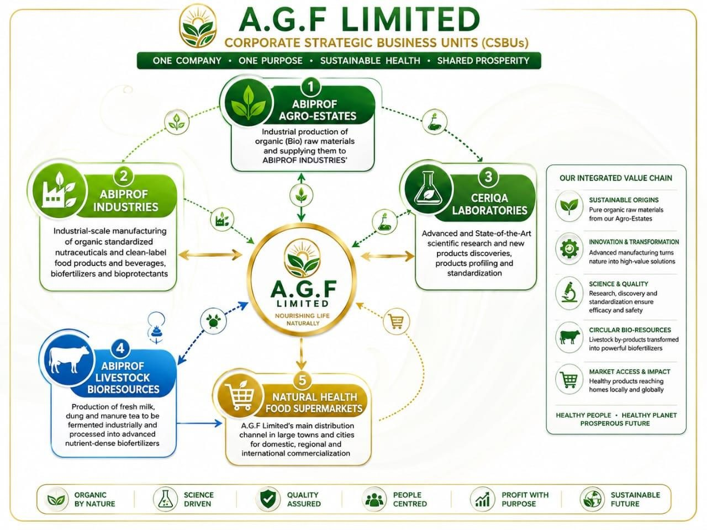

Profil de la société
Présentation exécutive d'A.G.F Limited : son résumé exécutif, son profil légal, le contexte stratégique zambien et ses énoncés de vision et de mission.
Résumé exécutif
African Green Farmers Limited (A.G.F Limited) est une société d'investissement agro-industrielle zambienne à capitaux privés, qui met en place une entreprise de bioéconomie circulaire entièrement intégrée et activée par le système ACIDS, dédiée au développement et à la fabrication, ainsi qu'à la commercialisation domestique, régionale et internationale, de plusieurs gammes de produits : (1) extraits naturels et bioactifs de qualité GMP — de qualité brute à haute pureté, (2) nutraceutiques, (3) compléments alimentaires, (4) aliments et boissons « clean-label », y compris des aliments et boissons fonctionnels et fortifiés — à travers l'installation intégrée ANINOVA INDUSTRIES (Advanced Natural, Integrated Nutraceutical, Organic & Value-Added Agro-Bio Industries).
Le capital d'amorçage d'ANINOVA INDUSTRIES est une facilité de développement senior sécurisée de USD 63 millions destinée à établir l'une des industries de fabrication agro-industrielle intégrée d'Afrique australe.
Le projet combine production agricole organique, fabrication industrielle, intrants agricoles biologiques, laboratoires de recherche, systèmes d'assurance qualité, infrastructure logistique et réseaux de commercialisation au sein d'un modèle opérationnel unique et verticalement intégré, conçu pour maximiser la valeur ajoutée, renforcer la sécurité de la chaîne d'approvisionnement et générer des flux de trésorerie durables à long terme, sous un dispositif de sécurité SBLC (Standby Letter of Credit) et DSRA (Debt Service Reserve Account).
Les produits de santé d'ANINOVA INDUSTRIES incluent une poudre de lait de soja instantanée fortifiée, un mélange de lait végétal fortifié (soja + amandes + noix de coco), des mélanges de jus de fruits enrichis, ainsi que des extraits botaniques standardisés d'une pureté ultra-premium (99 %) issus, pour l'essentiel, de cultures agricoles organiques locales (fruits, légumes, feuilles botaniques, racines, semences/graines, noix, etc.).
Les technologies de fabrication avancées de l'installation ANINOVA INDUSTRIES incluent : (1) l'ingénierie métabolique de précision des cellules/tissus végétaux et microbiens, l'élicitation et la fermentation, la biosynthèse, la biotransformation enzymatique et la fabrication, (2) l'extraction à froid cryogénique assistée par azote liquide (LN2) et la lyophilisation en gâteaux secs, (3) un système avancé de séchage sous vide actif/dynamique pour les émulsions/extraits botaniques riches en lipides à haute viscosité, (4) la micronisation cryogénique avancée assistée par azote liquide, (5) l'extraction hybride/intégrée éthanol/acétate d'éthyle et CO2 supercritique, (6) la purification bioactive multi-étapes à ultra-haute pureté, (7) la formulation et fabrication de dosages GMP avancée, (8) la fortification de précision en macronutriments, micronutriments et bioactifs, ainsi que (9) l'emballage GMP hermétique à azote.
La plateforme intègre :
- Plus de 2 000 hectares de systèmes de production agricole organique intégrés
- Plus de 5 000 agriculteurs contractuels
- L'installation de fabrication avancée ANINOVA INDUSTRIES sur 5 hectares
- Les laboratoires scientifiques avancés CERIQA LABORATORIES
- ABINOVA AGRO-ESTATES
- Les systèmes ABINOVA LIVESTOCK BIORESOURCE
- Le réseau de supermarchés NATURAL HEALTH FOOD SUPERMARKETS
- Des canaux de commercialisation domestiques, régionaux et internationaux
L'installation soutient le passage d'une unité de transformation pilote existante à une plateforme de production industrielle pleinement intégrée à grande échelle.
Résumé exécutif du crédit
A.G.F Limited, à travers sa division de fabrication « ABINOVA INDUSTRIES », présente une plateforme de production agro-industrielle et nutraceutique entièrement intégrée, comprenant un portefeuille commercial initial d'au moins 11 produits phares standardisés et « clean-label », destinés à être fabriqués en phase I via ABIPROF INDUSTRIES, en coopération technique avec les laboratoires CERIQA, détenus en propre.
Les CERIQA LABORATORIES d'A.G.F Limited poursuivent en continu la R&D sur la découverte de produits innovants, alimentant la fabrication industrielle d'ABINOVA INDUSTRIES de nouveaux produits organiques fondés sur des preuves, destinés à la commercialisation domestique, régionale et mondiale.

Le projet est conçu pour créer un écosystème industriel évolutif, capable de soutenir un remboursement de dette durable tout en générant un impact significatif sur le développement économique, social, technologique et environnemental.
Profil de la société
| Nom légal | African Green Farmers (A.G.F) Limited |
|---|---|
| TPIN (Tax Pay Incorporation Number) | 2003675243 |
| Licence d'investissement | ZDA/59004/10/2025 |
| Incitations fiscales (5 ans) | Réf. ZDA/DG/DUTY, 22 janvier 2026 (Ministère des Finances) |
| Mécanisme SBLC (Standby Letter of Credit) | En préparation auprès d'Absa Bank Zambia |
Contexte & justification stratégique
La République de Zambie présente l'une des destinations d'investissement agro-industriel les plus intéressantes d'Afrique, portée par une stabilité politique, une localisation stratégique au centre de l'Afrique australe, d'abondantes ressources en eau douce, et plus de 42 millions d'hectares de terres arables, dont une grande partie reste disponible à des coûts d'acquisition très compétitifs. Grâce à l'accès aux marchés régionaux via la SADC, le COMESA et la ZLECAf (AfCFTA), la Zambie offre une porte d'entrée vers une base de consommateurs en expansion rapide, tout en offrant des opportunités significatives de commercialisation agricole, de valeur ajoutée industrielle et de croissance tirée par l'exportation.
A.G.F Limited est stratégiquement positionnée pour capitaliser sur ces avantages structurels à travers une plateforme agro-industrielle et biotechnologique verticalement intégrée, combinant agriculture régénérative à grande échelle, fabrication avancée, recherche scientifique en laboratoire et systèmes de contrôle qualité, ainsi que commercialisation à l'export. Le projet transforme des ressources agricoles sous-utilisées en produits alimentaires, nutraceutiques et agricoles biologiques riches en bioactifs et en nutriments, réduisant la dépendance aux importations, générant des devises, créant des emplois durables, favorisant l'industrialisation rurale et un développement économique durable à long terme, tout en offrant de solides rendements commerciaux et une valeur d'investissement de qualité institutionnelle.
Énoncé de vision
Devenir une entreprise agro-industrielle africaine de premier plan, moteur d'une fabrication alimentaire durable, d'une agriculture régénérative (bio), d'une industrialisation rurale et d'une valeur ajoutée orientée vers l'exportation.
Énoncé de mission
Développer un écosystème agro-industriel évolutif qui transforme les ressources agricoles en produits alimentaires et agricoles riches en bioactifs et en nutriments, grâce à des technologies de transformation avancées et une participation rurale inclusive à grande échelle.